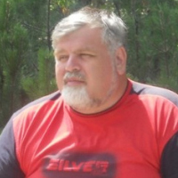

Възрастта не е пречка за живота! 109-годишният кардиолог разкри тайната на своето дълголетие и отлично здраве.
Д-р Стоянов твърди, че тайната на дълголетието се крие в кръвоносните съдове: ако са здрави и чисти, можете да живеете до 120 години и дори повече, като се чувствате напълно здрави. Кардиологът напълно потвърждава това твърдение.
Нашият репортер успя да интервюира професор Стоянов, който разказа как е удължил живота си, прочиствайки кръвоносните си съдове.

Когато лекарят навърши 109 години, той беше поздравен от Президента.
- Професор Стоянов, няколко пъти сте казвали, че чистите кръвоносни съдове са в основата на доброто здраве. Защо?
- Всичко е много просто. Функционирането на органите и апаратите на човешкото тяло зависи от качеството на кръвообращението, което доставя кислород и хранителни вещества до вътрешните органи, а също така събира въглероден диоксид и метаболитни продукти. В детството, като тинейджери и когато сме млади, се движим повече, съдовете ни са нови, еластични и чисти, а органите ни се захранват максимално. От друга страна, с напредването на възрастта се движим по-малко и кръвоносните ни съдове започват да се запушват. Това се случва под влиянието на много фактори, не само вредни (като тютюнопушене, нездравословно хранене, лоша околна среда и заседнал начин на живот), но и естествени (например, отлагането на липиди е процес, който протича във всеки организъм).
Какво означава да имаш мръсни кръвоносни съдове? Представете си тръба, пълна с ръжда. Какво се случва? Налягането на водата се увеличава и водата става безвкусна. Същото се случва и с кръвоносните съдове: когато върху тях се отлага холестерол или други вещества, налягането се повишава (мръсните съдове са основната причина за хипертония!), кръвта се напълва с примеси и кръвообращението става небалансирано. В резултат на това настъпват промени във всички органи, дори в кожата.
Човешкото тяло старее. Ако внимавате и почиствате кръвоносните си съдове, ще имате шанс да живеете поне 20 години по-дълго без болки във вътрешните си органи и ставите, а тялото ви ще функционира перфектно. С други думи, изчистването на кръвоносните ви съдове може да удължи живота и здравето ви. И това не е просто теория. Препоръчвам този метод на моите пациенти и сам го практикувам. Всеки, който се вслуша в съветите ми, увеличи продължителността на живота си.
 Тази диаграма показва как съдовете се замърсяват. Ако никога не сте ги почиствали и сте над 40 години, те съдържат много мръсотия. Това може да повлияе на вашето здраве и може би процесът вече е започнал.
Тази диаграма показва как съдовете се замърсяват. Ако никога не сте ги почиствали и сте над 40 години, те съдържат много мръсотия. Това може да повлияе на вашето здраве и може би процесът вече е започнал.
- Какви заболявания могат да причинят замърсените кръвоносни съдове?
- Както казах, цялото тяло е засегнато. Но преди всичко страдат органи и системи, които са пряко свързани с кръвообращението, тоест сърдечно-съдовата система.
Замърсяванията в кръвоносните съдове могат да доведат до следните заболявания:
- Атеросклероза. Съдовете спират да работят правилно: малките съдове са напълно блокирани, а големите съдове съдържат много холестеролови плаки.
- Сърдечна исхемия. Причинява се от липса на кръв, навлизаща в коронарните съдове, което от своя страна се дължи на примеси в съдовете.
- Инсулт. Спирането на притока на кръв към мозъка причинява смъртта на нервните окончания, което води до загуба на определени функции.
- Хипертония. Замърсяванията в кръвоносните съдове причиняват стесняване на лумена и повишаване на кръвното налягане.
- Варикозно разширени вени. Те се появяват и вътре в тялото, а не само по краката (тревожен проблем за жените). Хемороидите са също резултат от разширение на вените.
- Венозна и артериална тромбоза. Отлаганията на примеси в кръвоносните съдове причиняват кръвни съсиреци и смърт на съдовете, което може да доведе до смъртта на група клетки в тялото. Ако съсирекът се разтвори и навлезе в кръвния поток, може да настъпи запушване на кръвоносните съдове на сърцето (спиране на сърцето), последвано от смърт в 70% от случаите.
Снимките по-долу показват опасностите за здравето от отлаганията в кръвните клетки и колко те съкращават продължителността на живота.

Сърцето на жена, която е починала от спиране на сърцето

53-годишен мъж, получил инсулт. Инсултът води до инвалидност във ВСИЧКИ СЛУЧАИ, и засегнатите пациенти изискват специални грижи. Причината е запушване на кръвоносните съдове.

Разширените вени, от които страдат много жени, също са пряк резултат от отлаганията в съдовете.
Този проблем се разпространява. Сърдечно-съдовите заболявания причиняват 4 пъти повече смъртни случаи от другите причини. Лекарите знаят за това, знаят, че прочистването на кръвоносните съдове е необходимо, но по неизвестна причина българската медицина пренебрегва този аспект. Повечето лекари предписват лекарства за понижаване на кръвното налягане при хипертония, но те не са предназначени за лечение, а имат само временен ефект. Кръвоносните съдове трябва да бъдат почистени. Между другото, хората над 35-40 години практикуват този метод повече от половин век в САЩ и Азия, където пациентите знаят за необходимостта от прочистване на кръвоносните съдове. Все се чудех защо това не се случва у нас?
- Има ли симптоми, които показват наличието на отлагания в кръвоносните съдове?
- Разбира се, че има. Основните симптоми са:
- Мигрена
- Нарушения на паметта
- Хронична умора
- Безсъние
- Проблеми в интимния живот
- Зрителни и слухови увреждания
- Високо кръвно налягане
- Проблеми с дишането и стенокардия
- Бледност на кожата на краката
- Болки в мускулите и ставите
Кръвоносните съдове имат способността да натрупват примеси, особено при възрастните хора. Поради тази причина трябва да се избягва честата консумация на хамбургери и пържени картофи: след консумация на пържени и нездравословни храни, известно количество холестерол се отлага по стените на кръвоносните съдове, засягайки коронарните артерии, кръвоносните съдове, увеличавайки се с времето.
- Моля, кажете ни вашата тайна за прочистване на кръвоносните съдове.
- Процесът на пречистване на съдовете доскоро отнемаше няколко месеца. Сам събирах лечебни билки, търсих ги на пазара или ги поръчвах в интернет и накрая ги използвах за приготвяне на чай. Сега вече не ми се налага да правя това, тъй като моите колеги от Института по сърдечно-съдови заболявания създадоха добър и евтин съдов почистващ препарат - Cardiofort. Този продукт регулира кръвното налягане и лекува хипертония, като прочиства съдовете. Следователно, той е идеален за нашата цел.
 Cardiofort, приеман редовно, прочиства дори най-запушените кръвоносни съдове само за 3-4 седмици.
Cardiofort, приеман редовно, прочиства дори най-запушените кръвоносни съдове само за 3-4 седмици.
Този продукт не съдържа химикали, има 100% натурален състав и съдържа редки лечебни екстракти от билки и горски плодове: масло от рапица, майчина (обикновена), листа от маслина, листа и цветове от морски зърнастец, екстракт от кумкуат. Ето защо е толкова полезен за организма.
Много пациенти продължават да молят за съвета ми за прочистване на кръвоносните съдове. Напоследък им препоръчвам само този продукт. Той е много ефективен.
Сайтът на Института по сърдечно-съдови заболявания представи официалната статистика на клиничните проучвания, в които са участвали около 2000 пациенти, лекувани с Cardiofort.
Резултати от тестовете:
- Нормализиране на кръвното налягане 1-2 дни след приема на лекарството - 99% от пациентите
- Нормализиране на сърдечната честота след края на лечението - 97% от пациентите
- Пълно прочистване на кръвоносните съдове от холестерол след лечение - 99% от пациентите
- Подобряване на ефективността на лечението на хронични заболявания - 99% от пациентите
- Подобряване на цялостното здраве - 100% от пациентите
- Липса на каквито и да е нежелани реакции по време на лечението - 100% от пациентите
- Колко струва Cardiofort и откъде мога да го купя?
- Както знаете, пенсията не ви позволява да купувате скъпи лекарства, поради което никога не мога да препоръчам скъпо лекарство. Cardiofort не е толкова скъп и се продава до
Това е най-доброто лекарство за справяне с високо кръвно налягане. В резултат на това всеки може да закупи Cardiofort с -50% отстъпка.
За да поръчате Cardiofort:
- Попълнете формата;
- Мениджърът ще се свърже с вас, за да потвърди адреса за доставка;
- В рамките на 1-3 дни (необходими за доставка) ще получите Cardiofort с куриер.
- Професор Стоянов, благодаря за интервюто и че споделихте тази важна информация с нас.
Изключвайки микрофона, професор Стоянов призна, че обича да работи в градината и да помага на децата си, които вече са навършили пенсионна възраст. Съпругата му също е дълголетница: тя е на 99 години. И двамата извършват процедури за прочистване на кръвоносните съдове. Професорът смята, че това е единственото нещо, което им помага да живеят по-дълго.
АКТУАЛИЗИРАНО
Важно! Поради големия брой заявки, ние сме принудени да ограничим продължителността на тази промоция! Офертата е валидна до
включително!
Всички наши продукти отговарят на основните европейски стандарти за качество и се проверяват внимателно преди изпращане.
Коментари
Цветанка Иванова
Благодаря за статията, много е интересна. Вече поръчах Cardiofort.
Георги Костандинов
Вече закупих и изпробвах Cardiofort. Вече 7 години страдам от високо кръвно и не помня кога ми беше нормално. По препоръка на лекар реших да почистя съдовете. След едномесечно лечение с Cardiofort кръвното ми се нормализира! Сега не се е повишило от 2 месеца. Това е различен живот: чувствам се хиляди пъти по-добре. Препоръчвам това чудесно средство на всички. И с такава отстъпка това е почти безплатно.
Емилия Чендева
Освен това взех едномесечен курс на лечение с Cardiofort. Чувствам се по-здрава и по-силна. Чувствам се по-млада.
Лора Стойкова
Благодаря, поръчах този продукт. Харесва ми, че го доставят толкова бързо и директно до дома ви.
Иван Борисов
Пратката пристигна вчера. Прочистващата процедура ще направя с жена ми. Последните тестове показаха, че кръвоносните ни съдове са запушени с холестерол.
Дияна Ефтимова
Преди месец започнах лечение с Cardiofort. Понякога съм имала високо кръвно налягане и неправилен сърдечен ритъм в миналото. Използвам го вече 2 седмици и кръвното ми се нормализира. Чувствам се напълно здрава.
Игорь Aosta Бойко Иванов
Аз съм на 61 години и преди 5 години започнах процедури за съдово прочистване. Те ми помагат да бъда здрав и ми дават сила. Нямам никакви заболявания, а много от колегите вече са починали. Да не говорим, че все още правя секс! Прочистването на кръвоносните съдове е 100% необходимо!
Борислава Некова
Благодарение на това лекарство излекувах високото кръвно налягане, от което страдах дълги години. С течение на времето развих диабет, проблеми с бъбреците, проблеми с паметта и зрението ми. Минах през много процедури, които не дадоха никакъв резултат и тогава реших да пробвам Cardiofort. Това беше първият път, когато поръчах лекарство онлайн, но трябва да кажа, че беше много лесно.
Костандинка Иванова
Благодаря! Видях предаване за този продукт и всички лекари го препоръчаха. Казаха, че прочистването на съдовете е абсолютно необходимо за всички.
Асен Петров
Това средство е много ефективно, потвърждавам го! Дълги години бях 140/90, но след лечение кръвното ми налягане се върна до 125/80. Много съм добре!
Гергана Стоянова
Прочетох цялата информация за Cardiofort. Удивително и впечатляващо!
Георги Василев
Успях да се възползвам от предложението! Благодаря ти!
Иван Борянов
Преминах и едномесечен курс на лечение (с прекъсвания) и се чувствам по-добре. Пълен съм със сила и енергия и укрепих имунната си система. Чувствам се с 10 години по-млад, обаче съм на 72 години.
Гергана Милева
Преди 2 месеца имах почистваща процедура с Cardiofort. Когато имах запушени кръвоносни съдове, винаги се чувствах много уморена, но сега имам много енергия. Мога да правя повече неща през деня. Преди имах силно главоболие, но сега го няма. Аз също спя по-добре. Както и да е, поръчах още няколко опаковки. Благодаря ви!